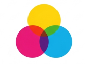
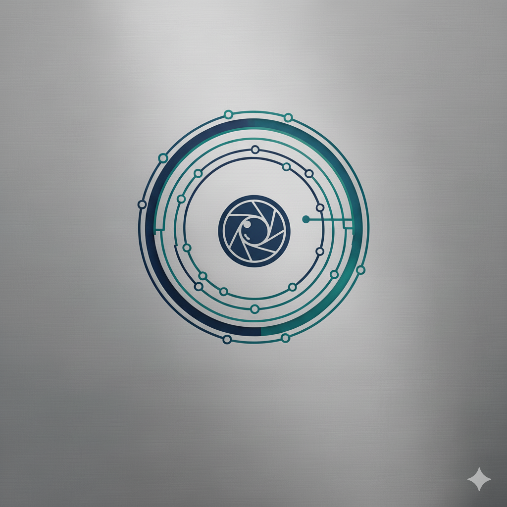

Who am I?
I am a technology and innovation enthusiast with a solid background in Computer Science and Software Engineering (Bachelor's degree) and an Associate degree in Software Development. With over 5 years of experience in the field, I currently work as a Senior DevOps Engineer at Conceptu, where I apply my expertise in automation, infrastructure as code, and continuous delivery practices to transform complex challenges into efficient and scalable solutions.
Technical Expertise
Throughout my professional journey, I have developed diverse technical skills that enable me to work on different fronts. I master essential tools and platforms such as Kubernetes, Docker, AWS, and Azure for container orchestration and cloud infrastructure management. I work with CI/CD pipelines using GitHub and GitLab, and have solid experience in automation with PowerShell. In software development, I have knowledge in languages such as C, C++, C#, Python, and modern frameworks like React Native and Qt, which gives me a holistic view of the application lifecycle, from development to production operations.
PROJECTS


Senior DevOps Engineer - Conceptu
2025 - Present- Leading DevOps transformation initiatives
- Implementing CI/CD pipelines with GitHub and GitLab
- Managing cloud infrastructure on AWS and Azure
- Orchestrating containerized applications with Kubernetes
- Automating deployment processes and infrastructure as code
🎓 Bachelor's in Software Engineering
2024 - Present- Currently studying advanced software engineering principles
- DevOps and cloud-native architectures
- System design and scalability patterns
Software Engineer - SkyDrones
2023 - 2025- Developed drone control applications using QML and C++
- Created embedded firmware with C, C++, and Lua
- Worked on real-time systems and low-level programming
- Implemented communication protocols for drone systems
- Optimized performance for embedded devices
🎓 Bachelor's in Computer Science
2020 - 2024- Deep dive into computer science fundamentals
- Artificial Intelligence and Machine Learning
- Advanced data structures and algorithms
- Software engineering methodologies
Systems Developer - Vent Digital
2020 - 2022- Built modern web applications with React and Next.js
- Developed cross-platform mobile apps using React Native
- Managed containerized deployments with Docker
- Worked with cloud platforms AWS and Azure
- Orchestrated services using Kubernetes (K8s)
🎓 Associate Degree in Systems Development
2018 - 2020- Studied software architecture and design patterns
- Advanced programming concepts and algorithms
- Database management and system analysis
Website Development Intern
May 2016 - Dec 2016- Developed responsive websites using HTML, CSS, and JavaScript
- Worked with MySQL databases and PHP backend development
- Gained foundational web development skills
- Collaborated with design team on UI/UX implementations
Download Resume
Get my complete resume in your preferred language